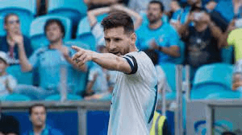

Sean eternos: Campeones de America
La ansiedad de los hinchas argentinos por el comienzo del Mundial de Qatar es total y, para llevar mejor la espera -o para aumentar los nervios-, se estrenó en Netflix ‘Sean eternos: campeones de América’, el documental que muestra la intimidad de la Selección argentina durante la Copa América de Brasil 2021.
La producción argentina tiene tres capítulos en los que se muestran imágenes inéditas de la concentración, los viajes y la estadía de la Albiceleste en tierras brasileñas durante la competencia que cortó una racha de 28 años sin títulos para la Selección, así como también cuenta con testimonios exclusivos que acompañan el recorrido del equipo de Lionel Scaloni para conseguir el tan deseado trofeo.
Capitulos
Capitulo 1
Despues de perder cuatro finales y pensar en retirarse de la seleccion, Messi regresa con las energias renovadas para encarar la fase de grupos de la Copa America 2021.
Capitulo 2
Con el liderazgo de Messi y la audacia de Dibu, De Paul, Lautaro y Di Maria, Argentina le hace frente a los desafios en cuartos de final y seminales
Capitulo 3
Es el momento: Messi, Di Maria y todo un pais van por la gloria frente al Brasil en el Maracana. Pero a la seleccion Argentina la persiguen fantasmas del pasado.
Entrevistas exclusivas
Los primeros minutos del documental que se puede ver en Netflix desde el jueves 3 de noviembre muestran un resumen de los títulos que obtuvo en su historia la Selección argentina, las derrotas de los últimos años y se centra en Lionel Messi, en cómo es como jugador, en las duras finales perdidas que lo tuvieron como protagonista: Mundial 2014 y las dos ediciones de la Copa América, en 2015 y 2016.
La emocionante arenga de Messi antes de ganar la Copa América
Luego, las palabras de los futbolistas que lo conocen muy bien como su querido amigo Luis Suárez, Neymar, Xavi Hernández, Cesc Fàbregas y Ronaldinho, Dani Alves y hasta Arturo Vidal. También se pueden ver los testimonios de los propios compañeros de Leo en la Selección, que lo enaltecen no cómo como jugador, sino persona. En ese sentido se puede escuchar a Ángel Di María, Lautaro Martínez, Nicolás Otamendi, Rodrigo De Paul, Tagliafico y Emiliano Martínez. También se ve al entrenador de la “Scaloneta”, Lionel Scaloni, a Pablo Aimar y a Javier Mascherano.
Después quien toma la palabra es él, el propio Lionel Messi, quien recuerda cómo se enteró que la Copa América 2021 se iba a disputar -estaba en duda por la pandemia de coronavirus-, cómo fue saber que iría a Brasil nuevamente y lo que tuvo que vivir el plantel en esa situación particular que vivía el mundo.
Imágenes inéditas
Entre el recorrido que muestra el documental se pueden observar gran cantidad de imágenes inéditas de la concentración, de la convivencia del grupo en Buenos Aires y en Brasil, de la intimidad de los jugadores que conquistaron la Copa América.
También se ven los viajes en avión, las partidas de truco, los chistes entre jugadores, las promesas y las mejores anécdotas que en pocas horas desde que se lanzó la miniserie rápidamente se hicieron virales.